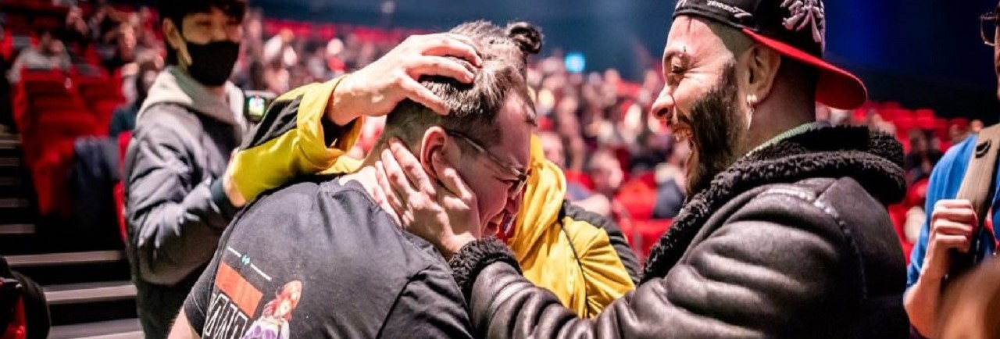
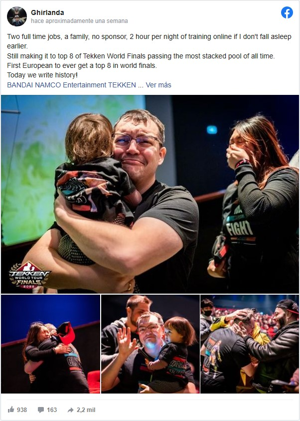

Padre de familia con 2 empleos de tiempo completo hace historia en torneo de TEKKEN 7
Joshua "Ghirlanda" Bianchi, de 31 años, obtuvo el cuarto lugar en el evento competitivo
Los deportes electrónicos son una escena muy demandante. Para obtener un gran nivel y tener la oportunidad de ganar en los torneos, los jugadores practican por horas para pulir sus habilidades. Claro, los jóvenes que se dedican a tiempo completo a los esports tienen mayores oportunidades de triunfar. Sin embargo, los padres de familia también pueden tener participaciones destacables, tal como lo demostró un pro player de TEKKEN 7.
Hablamos de Joshua "Ghirlanda" Bianchi, un gamer de 31 años que hizo historia en TEKKEN World Tour, uno de los eventos de esports más importantes del videojuego de lucha de Bandai Namco. A pesar de no contar con un patrocinador ni tener mucho tiempo para practicar, casi logra el podio en el evento.
Lo que pasa es que Ghirlanda se convirtió en el primer jugador europeo en llegar al top 8 en la fase final del evento competitivo. En ese momento, desconocía que su viaje aún estaba lejos del fin. Lo que pasa es que terminó su participación con honores, pues quedó en el cuarto lugar.
“2 trabajos de tiempo completo, una familia, sin patrocinador, 2 horas por noche de entrenamiento online si es que no me duermo antes. Conseguí llegar al top de las finales mundiales de TEKKEN al pasar por el pool más grande de todos los tiempos. Primer europeo en llegar al top 8. ¡Hoy, escribimos historia!”, afirmó el jugador de 31 años en Facebook.
En la publicación, se ve cómo Ghirlanda celebra en compañía de su hija y su esposa mientras se lleva el aplauso del público. Sin duda, una historia de superación que demuestra que cualquier jugador con pasión, sin importar su edad o el tiempo libre, puede llegar a la cima de los deportes electrónicos.